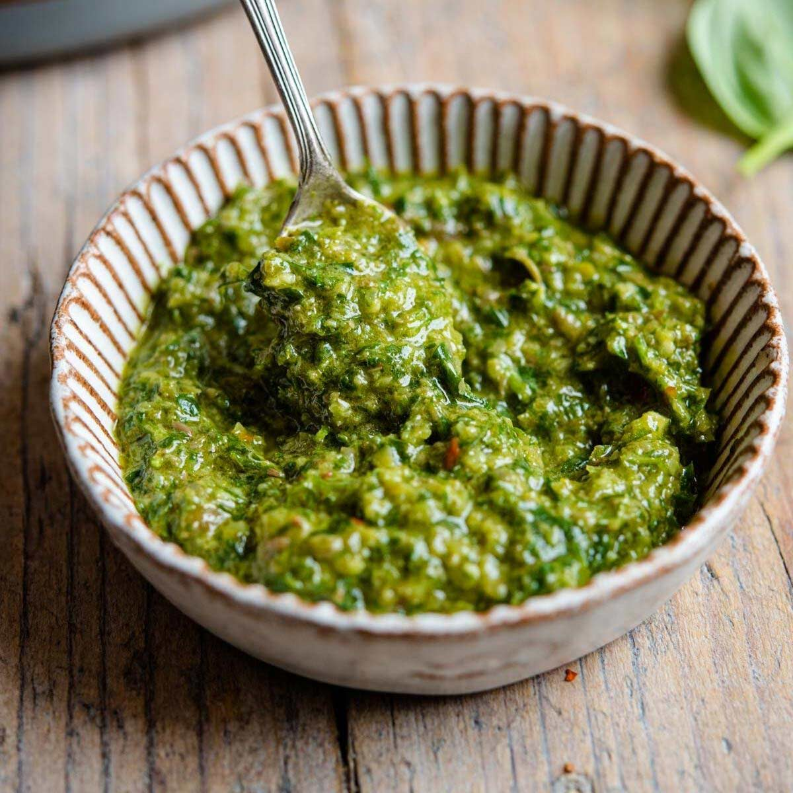

Italian Salsa Verde

Description
Italian salsa verde is a green herb sauce with fresh parsley and basil. A versatile, no-cook condiment made in the food processor, it keeps for 2 weeks in the refrigerator. Use it over grilled steak, chicken, a salad dressing, and much more.
Ingredients
- 1 cup fresh parsley
- 1 cup basil
- 1/4 cup capers
- 1 large lemon
- 2 cloves garlic
- 1/2 cup olive oil
- 1/2 teaspoon chili flakes
- 1/4 teaspoon salt
Steps
- Combine parsley, basil, capers, lemon juice, garlic, olive oil, and chili flakes in the bowl of a food processor; pulse a few times. Pour olive oil in slowly, while pulsing a few more times until uniform consistency but not a puree. Mix in salt.
- Can be stored for up to 2 weeks in the refrigerator.